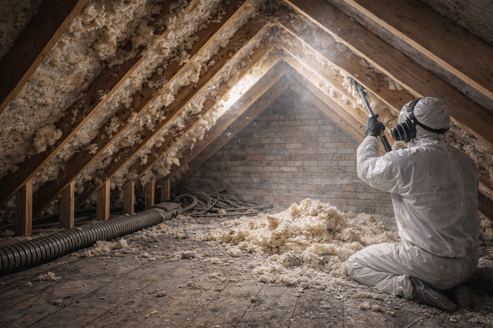

Spray foam removal
Removal planning for accessible foam affecting roof inspection, property transactions, maintenance or replacement insulation.
Learn about spray foam removalSpray foam and insulation-removal help
If foam or other insulation has been questioned during a sale, purchase, mortgage, remortgage, equity-release application or survey, Insofix can help you understand the sensible next step.

Send safe photographs of the loft or affected area, any product details and the relevant survey wording if you have it. The free remote review helps Insofix understand the apparent material, extent, access and whether a quotation route is possible.
Some properties need a chargeable on-site assessment before pricing. That is usually because access, foam depth, construction, contamination or visible condition cannot be judged reliably from photographs.
Insofix can review removal scope, quote agreed work and provide available completion information such as photographs, a work summary and waste documentation where applicable.
Lenders, valuers, surveyors, insurers and buyers make their own decisions. No removal company can promise a mortgage, valuation or sale outcome.
Removal planning for accessible foam affecting roof inspection, property transactions, maintenance or replacement insulation.
Learn about spray foam removal
Removal of loft insulation where access, damp, pests, deterioration or preparation for later works is the main concern.
Read about loft removal
Initial review of cavity-wall insulation concerns, including construction, material type, damp symptoms and suitability limits.
Read about cavity-wall extractionInsofix considers enquiries across England, with priority availability initially focused across Southern England. Longer-distance visits may include agreed travel or mobilisation costs.
We will help you understand the most sensible next step without asking you to rely on a guess.
Send property details